Explore Dresden
A Brief History
Dresden, famously known as the 'Florence on the Elbe', is an incredibly spectacular, deeply historic city that was masterfully rebuilt after the absolute devastation of World War II. The remarkably beautiful historic center is incredibly packed with stunning Baroque architecture, massive domed churches, and deeply impressive royal palaces. It beautifully offers an exceptionally romantic, culturally rich European experience perfectly situated along the sweeping curves of the Elbe River.
Attractions Map
Top Sights & Activities
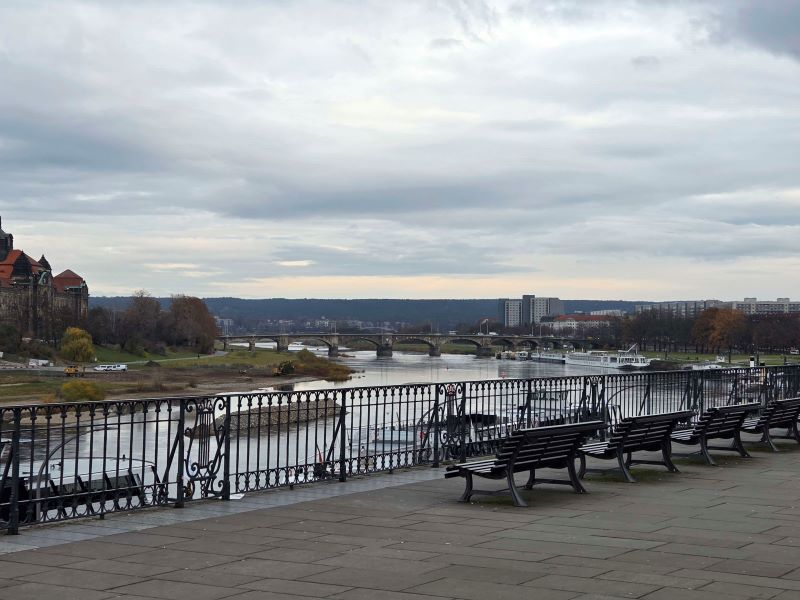
Brühl's Terrace
Brühl's Terrace is a raised promenade above the Elbe, built on the remains of the city's 16th-century fortifications. Nicknamed the 'Balcony of Europe,' it offers views across the river toward the Neustadt. Statues, balustrades, and the Albertinum museum line the walkway.
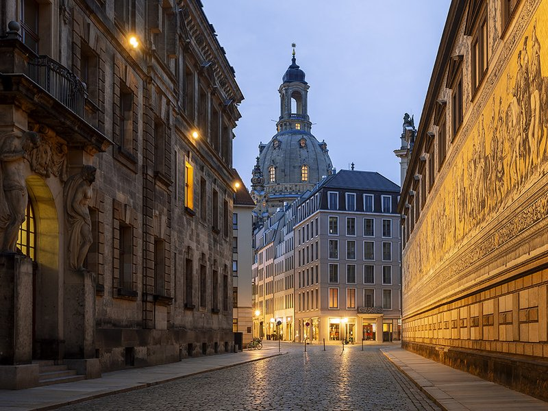
Frauenkirche Dresden
The Frauenkirche is a Baroque Lutheran church in the Neumarkt, destroyed in the 1945 bombing and rebuilt between 1994 and 2005. Original stones were incorporated into the new structure, and the golden cross atop the dome was a gift from Britain. The interior holds one of Europe's largest stone domes.
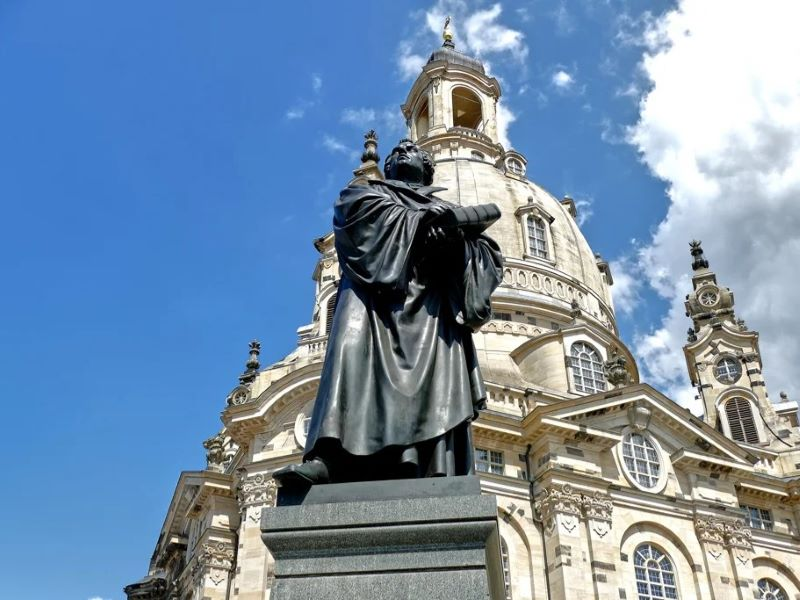
Martin Luther Statue
The Martin Luther statue in Neumarkt was erected in 1885 to commemorate the Reformation. The bronze figure survived the wartime destruction of the square and was restored after reunification. It stands near the Frauenkirche, linking Dresden to the wider Protestant history of Saxony.
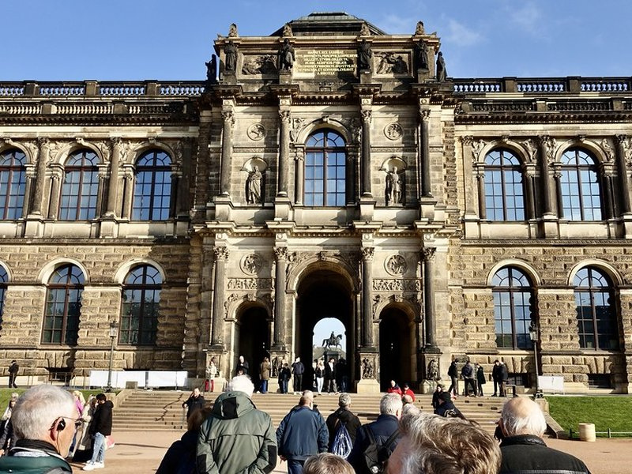
Stallhof Dresden
The Stallhof is a Renaissance courtyard within the Residenzschloss, once used for tournaments and court festivities in the 16th century. Its arcaded galleries and sgraffito decoration illustrate Saxon equestrian culture. Today it hosts events including the annual Medieval Christmas Market.
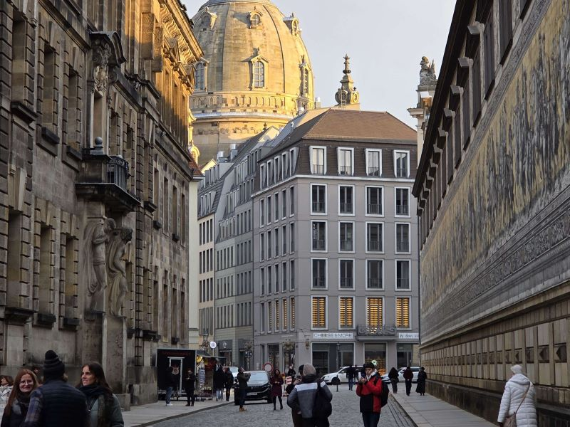
Fürstenzug
The Fürstenzug is a 102-meter porcelain mural on the outer wall of the Stallhof, depicting 35 rulers of the House of Wettin from 1127 to 1904. Created from over 23,000 Meissen tiles between 1904 and 1907, it is one of the largest porcelain artworks in the world.
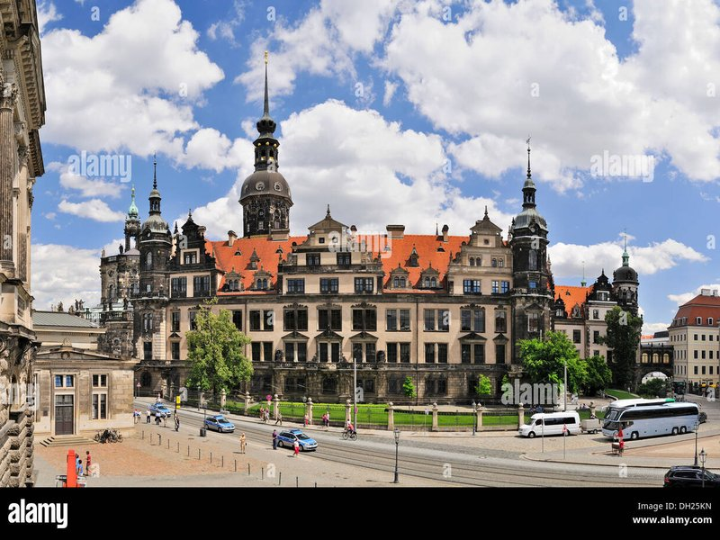
Cathedral St. Trinitatis
The Cathedral of the Holy Trinity, also called the Hofkirche, was built in the 18th century as Dresden's Catholic court church under Augustus III. The crypt holds the remains of many Wettin rulers. Silbermann organs and a Rococo interior make it a notable stop on the historic city walk.
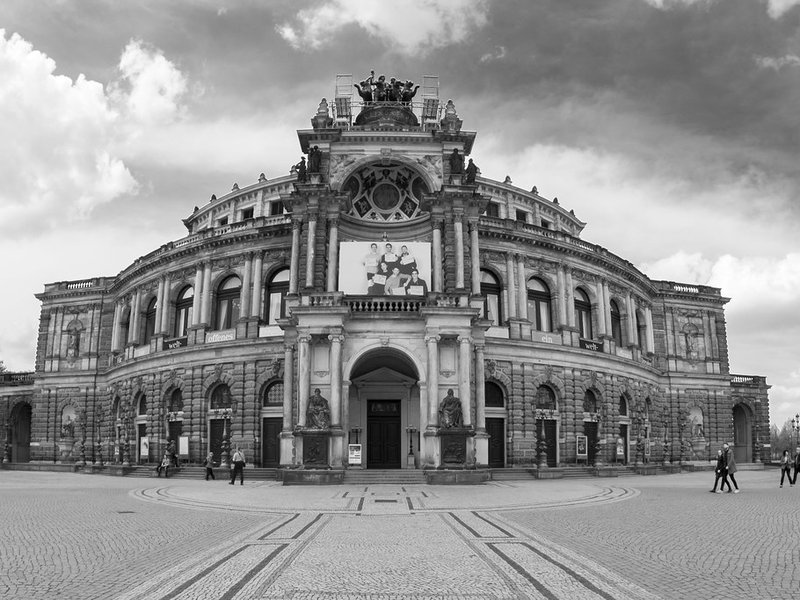
Theaterplatz
Theaterplatz is Dresden's main civic square, bordered by the Semperoper, the Zwinger, and the Residenzschloss. Equestrian statues and open space give it a formal character. Most of the surrounding buildings were rebuilt after wartime damage while preserving their original facades.
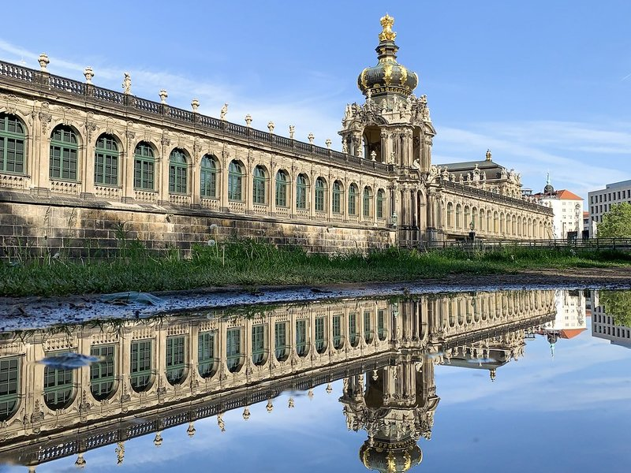
Dresdener Zwinger
The Zwinger is an 18th-century palace complex designed by Matthäus Daniel Pöppelmann for Augustus the Strong. It originally served as an orangery and festival venue. Today it houses the Old Masters Picture Gallery, the Porcelain Collection, and the Mathematics-Physics Salon.
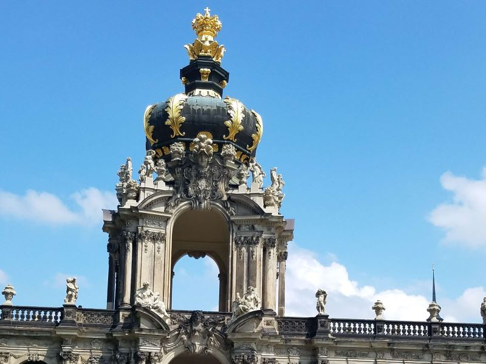
Kronentor
The Kronentor, or Crown Gate, is the southeastern entrance to the Zwinger, topped by a replica of the Polish royal crown. It symbolizes Augustus the Strong's election as King of Poland in 1697. Sculptural groups on the gate represent the four seasons and four elements.
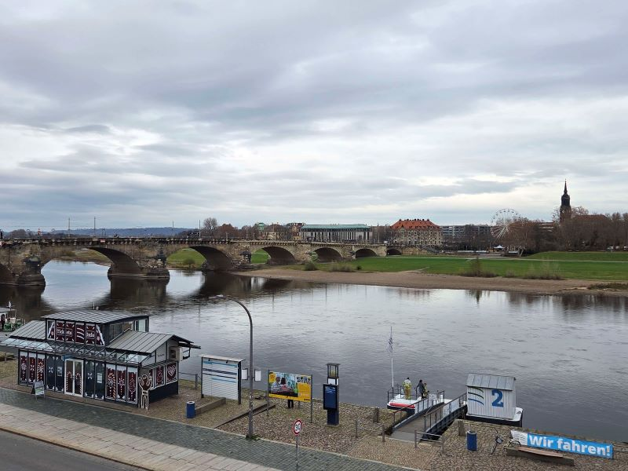
Augustusbrücke
The Augustusbrücke spans the Elbe between the Altstadt and Neustadt. A bridge has stood at this site since the 12th century; the current stone structure largely dates from the 19th century. From the bridge, walkers can see the skyline of spires, domes, and the riverfront terraces.
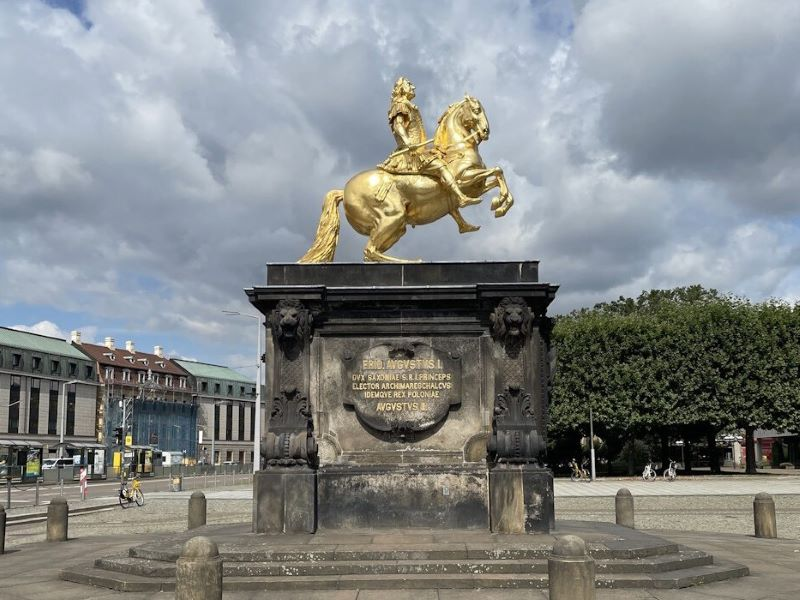
Goldener Reiter
The Goldener Reiter is a gilded equestrian statue of Augustus the Strong, erected in 1736 on the Neustädter Markt. The figure faces east toward Poland, dressed in Roman armor. It is one of the most recognizable landmarks of Dresden's Neustadt district.